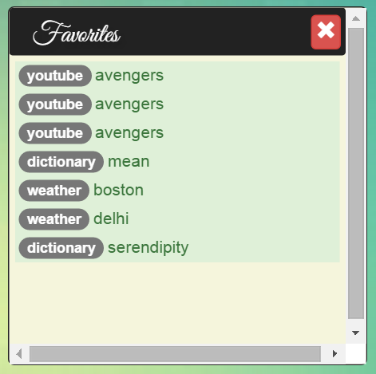

The favorites will be available on the "yourspace" to the person logged in to the website. This displays a tile with all the favorites of that person. The ajax call to the server will fetch the favorites stored in the database for that user.
The favorites come from the button of the tile. When clicked, the database is updated with the search query and the kind of he tile.
When is clicked, it fetches the favorites like this
